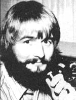

The author of this column, who has been writing for MOTHER since 1973, is the inventor of slowscan television ... a method of amateur radio transmission that allows ham operators to both hear and see each other during shortwave broadcasts.
WOMEN IN HAM RADIO
Many people are intrigued by the idea of ham radio, but not all of them manage to climb the twin peaks of radio theory and Morse code in order to actually get their licenses. And you may have wondered occasionally-as I have-what sorts of factors help individuals overcome those imposing adversaries.
Part of the answer seems to lie in the kind of support and encouragement each wouldbe radio operator got as a youngster. My own love affair with electronics, for example, began when I was five years old and my father gave me a crystal set. My early ardor was later reinforced by teachers, scoutmasters, and-again-my parents, until I finally got my license at age 15. Everyone along the way said yes to my interest and my aspirations, and-as a result-I never once doubted my ability to explore the world of radio.
Many others-especially women-haven't been so fortunate. Little girls are more likely to receive dolls than crystal sets, and find that a budding interest in technology is all too often met with laughter or disapproval. Despite this sort of discouragement, though, women have managed to learn both radio theory and Morse code, and obtain their licenses. I recently asked three women ham friends how they'd managed to succeed. Their comments are, I think, illuminating.
"My approach to ham radio and-indeed-to most of my interests," says Roberta "Ro" Perkins, N3CUD (Dept. TMEN, 3101 North Van Buren Street, Wilmington, Delaware 19802), "is to decide that I really want to do something ... and then put on blinders to any negative input.
"Furthermore, I think any woman who has even the slightest interest in ham radio should learn more about it. I feel that no matter how much you put into this hobby, you'll get much more out of it. I'm divorced, and my radio has given me a means of meeting people with a variety of interests and ideas. The usual ways of getting to know strangers just don't do it for me."
Pam Linnell, KA1ETW (Dept. TMEN, RD 11 Box 455, Warrior's Mark, Pennsylvania 16877), wrote: "I'd been interested in amateur radio since I was a teenager, but didn't know any hams. (Also, I admit that 14-year-old girls are a little shy of hobbies that might label them as odd.) My electronic in
terests persisted, though . . . and I eventually got a 2nd Class radio-phone license. Finally, the bimonthly prodding of New Directions Radio got me to take the Novice test. My sister Marcia took it with me ... and now we both have Novice licenses!
"It's true that Marcia and I are not terribly knowledgeable about electronics in a practical sense, but we aren't afraid of the technology, either. We have no brothers, you see, so-as we were growing up-our dad had to show off his model airplanes and radio control models to us. (Incidentally, he just started on his ham license.)
"My husband Larry and I want our three children (two girls and a boy) to know they can do anything. In fact (believe it or not), Maria, age six, helped me wind some coils last night! I think the kids are certainly more at ease with technology than we were as youngsters. For example, when Maria was still a toddler, she used to sit in my lap while I entered programs into our TRS-80 Model I computer. And later-at age three-Maria crawled into my lap one night as I was working at our old manual typewriter and asked, 'Mommy, where's ENTER?' The child thought the typewriter was a computer keyboard!"
My third friend is Mary Duffield, WA6KFA (Dept. TMEN, Box 3024, Santa Cruz, California 95063). She's better known as "Planetary Mary" to the host of people who admire her global/future orientation and her ability to turn youngsters on to life. (In a later column I'll tell you more about her projects and exploits.) Here, Mary shares her feelings about ham radio.
"When friends gave me a ham radio to use in developing my Planetary Citizen program on my sailboat about six years ago, I dreaded having to master technical electronics and Morse code to be able to use it. The minute I started studying, though, I began to grasp the magic of radio ... to discover that electricity and magnetism are just different aspects of the same forces that are holding the stars apart and pulling people together. So, at 60, I mastered the code-while bicycling to market or polishing the boat's brightwork -by using a tape recorder. Having forsaken mathematics in grade school (actually, it forsook me first!), I was a bit anxious ... and still need a lot of encouragement to work toward the higher licenses. I have to confess that I flunked my General exam twice, but my tireless ham helpers kept me trying. (What a brotherhood you inherit with a license ... and, increasingly, what a sisterhood!) The third time around I passed, and was handed the key to a wideopen window on the world.
"Now, ham radio is the most rewarding, exciting, and meaningful facet of my life because it expands all the other facets: friendship, family contacts, sailing, etc. I've heard grannies ragchewing with grandchildren they'd never have known sans radio ... I've heard housewives bouncing messages off the moon ... and I've talked to a pilot in Guatemala who was unable to land until an alligator crawled off the field. But the most durable thrill to me is seeing potential dropouts from school catch fire with the idea of using radio to cooperate with young people around the world. Today's children seem to be able to relate to anything electronic, and playing the ham radio 'World Game' puts them in a major league ballpark after encounters with Pac-Man. Furthermore, I've found that the idealist in every young person craves to put his or her 'highest powers to their highest use'.
"I'd like to tell my fellow females that radio can really free up your life, because you no longer have to put your body where you want your mind to be. Ham radio makes it possible to think globally and act locally. Unlike commercial radio and television, it isn't structured one way, from the top down. In fact, it reinforces the human family instead of the power elite. We're each one another's guru, and we become increasingly connected in networks.
"So, all you ladies out there, we need you ... to share these exciting communication skills with all the others cooperating to create a planet worthy of our children. You know? You know!"
Ro, Pam, Mary ... many thanks. WOW!
Peace,
Cop Macdonald (VE1BFL)
P.O. Box 2941
Charlottetown
Prince Edward Island
Canada CIA 8C5
New Directions Radio is an international network of radio amateurs concerned with those ways of using ham radio (and related modes of communicating) that promote our own growth as individuals, and that we perceive as helping to create a more aware, more caring, and more responsible human society. We encourage all who share these interests to work with us. A current schedule of on-the-air activities is included in each issue of the bi-monthly New Directions Roundtable Newsletter, published by Art Mourad (WB2POB) as a service to the rest of us. To subscribe, send 250 for each issue desired to Art Mourad, Dept. TMFN, P.O. Box 787, Bergenfield, Neu, Jersey 07621.
COMING UP ON THE NDR EAST COAST NET 8:00 p.m. Eastern Time
3940 kHz
MARCH 7.
Jeanne Hand-Bonia kowski will discuss the home birth option (via WB2MIC).
MARCH 21.
Anthropologist Den nis Bartels will tell us about his year in the Soviet Union (via VO1OK).
|
 PHOTO BY BEVERLY MILLS STETSON |
|
|